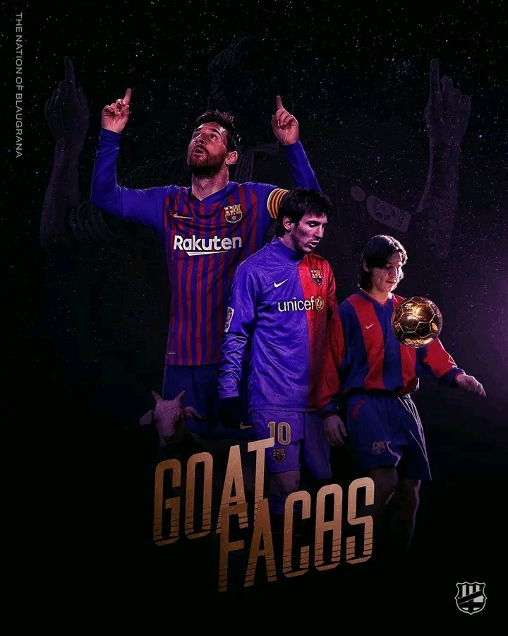

Key Players of Barcelona
Throughout its history, Barcelona has been home to many legendary players such as Lionel Messi, Xavi Hernández, and Andrés Iniesta. These players have defined the club's success.ButLionel Messi's claim to the title of FC Barcelona's greatest player rests upon a foundation of unparalleled statistical achievements. He shattered records, becoming the club's all-time leading scorer, a feat that alone secures his place in history. Beyond goals, his playmaking abilities were equally exceptional, as evidenced by his record-breaking assist numbers. This dual threat, the capacity to both score and create at an elite level, set him apart from his contemporaries and predecessors. Furthermore, Messi's tenure at Barcelona coincided with the club's most decorated era. He was a pivotal figure in numerous La Liga triumphs and UEFA Champions League victories, consistently delivering match-winning performances in crucial moments. His presence on the field directly translated into silverware, solidifying his role as a catalyst for the club's success. This accumulation of trophies, coupled with his individual brilliance, formed a powerful narrative of dominance. Messi's individual accolades further underscore his extraordinary talent. His multiple Ballon d'Or awards, more than any other player in Barcelona's history, serve as a testament to his consistent excellence. These awards, voted on by peers and experts, reflect the recognition of his exceptional skills and impact on the game. His sustained high level of play across numerous seasons cemented his legacy as not just a great player, but a generational talent. Perhaps most significantly, Messi's influence extended beyond mere statistics and trophies. He became synonymous with Barcelona's iconic "tiki-taka" style, elevating it to an art form. His dribbling, passing, and vision were integral to the team's fluid and mesmerizing play. He not only played the Barcelona way, he defined it. His impact on the club's identity and playing philosophy is an indelible part of its history. Finally, his longevity and consistent high level of performance, along with his global impact on the fanbase, truly places him at the peak of Barcelona's history.